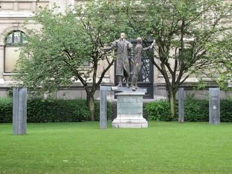
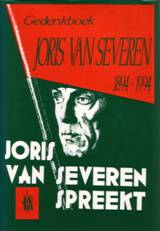

> nieuwsbrief > 2012 - nr 4
Inhoud
De worsteling van Henri Bruning
Het Katholiek
Nieuwsblad nr. 29 van vrijdag, 20 juli wijdde een
paginagroot artikel aan Henri Bruning onder de titel “De worsteling van
Henri
Bruning”. Het artikel van de hand van Robert Lemm rept met geen woord
over het
Dinaso-verleden van Henri Bruning, enkel wordt vermeld dat hij tijdens
de
bezetting lid was van de Kulturkammer
en daarom door het Nederlandse schrijversgild uitgestoten werd. Waarbij
Lemm
fijntjes langs zijn neus opmerkt dat ook een schrijver als W.F. Hermans
daar
lid van was zonder dat dit hem klaarblijkelijk problemen opleverde.
Maar omdat
Bruning uitgesproken katholiek was werd hij dubbel verdacht.
Lemm ziet hem - en dat is wel
een héél erg hoge eer - in de lijn van denkers als Dostojewski, Bloy,
Unamuno,
Chesterton, Papini, Bernanos. Hij verwijst in zijn artikel vooral naar
Bruning’s Verworpen Christendom, volgens hem zijn
“kroonjuweel”, een
reeks beschouwingen, soms polemisch, over tijdgenoten als Menno Ter
Braak,
Anton van Duinkerken en Jacques Maritain. Geen van hen vindt genade in
zijn
ogen.
___________________
Bron:
Katholiek Nieuwsblad, nr. 29
van vrijdag, 20 juli
2012 - Robert Lemm, ‘De worsteling van Henri
Bruning’, in Katholiek Nieuwsblad, nr. 29, 20 juni
2012, p. 16.
Exit
2012
Met dit vierde nummer van onze Nieuwsbrief
sluiten we de jaargang 2012 af. Rond de jaarwisseling
komt het eerste nummer van 2013 er al aan. 2013 wordt nog een “gewoon”
jaar,
met een “gewoon” jaarboek. voor 2014 plannen we een colloquium te
Wakken,
waarop de
grote fotobiografie over Joris van Severen en zijn beweging
- waarvoor
Zestig jaar na zijn gewelddadige dood is er
eindelijk
een televisieportret van Verdinaso-leider Joris van Severen
(1894-1940).
Documentairemaker Herman van de Vijver maakt het voor Histories.
“Van Severen viel een beetje buiten de
documentatiereeksen van Maurice de Wilde omdat hij doodgeschoten werd
toen de
oorlog begon. En na De Wilde was men alles wat met de Tweede
Wereldoorlog te
maken had, lange tijd beu bij de omroep”, legt Van de Vijver uit.
Dat er zo lang gewacht werd met een
TV-portret heeft
ook zijn voordelen. “
Joris van Severen blijft zestig jaar na
zijn dood nog
steeds velen fascineren. Deze fascinatie heeft te maken met zijn
charismatische
persoonlijkheid. Van de Vijver: “Hij was klein van gestalte, had geen
sterke
gezondheid en was eigenlijk geen groot redenaar. Maar hij had iets, hij
kon
mensen overtuigen.
Van Severen werd in 1894 geboren als oudste
zoon van
een plattelandsnotaris in Wakken, op de grens van West- en
Oost-Vlaanderen. Hij
werd tweetalig opgevoed en ging, na zijn humaniora bij de jezuïeten in
Gent,
naar de universiteit om er rechten te studeren. Zijn studie werd
onderbroken
door de oorlog. Van Severen trok naar het leger, waar hij
geconfronteerd werd
met de ongeletterde Vlaamse volksjongens, het arme Vlaanderen. Hij
raakte
betrokken bij de Frontbeweging, de clandestiene organisatie die het
Vlaamse
bewustzijn van de soldaten probeerde te versterken en opkwam voor hun
rechten.
In 1921 richtte Van Severen het literaire
tijdschrift Ter Waarheid op, dat het vier jaargangen
zou uithouden. In datzelfde jaar werd hij volksvertegenwoordiger van
het
Vlaamse Front, een partij die uit de Frontbeweging was gegroeid. Van
Severens
ideaal groeide naar een Groot-Nederland, zonder Wallonië. In 1928 hield
hij een
opmerkelijke toespraak in het parlement waarin hij onder meer betoogde
dat
België zich diende te verontschuldigen voor het feit dat het land de
Vlamingen
altijd had verwaarloosd. Maat de gevleugelde woorden
“
In 1931 – hij was toen geen parlementslid
meer –
richtte hij het Verdinaso op; het Verbond van Dietse Nationaal
Solidaristen,
met een eigen geüniformeerde militie. Nauwelijks drie jaar later sloeg
hij een Nieuwe Marsrichting in. Hij wilde de
Belgische staat niet meer vernietigen, maar veroveren. Hij droomde
zelfs van
een herstel van de Bourgondische Nederlanden, waarvan Luxemburg en
Picardië
deel zouden uitmaken. Door deze pro-Belgische houding verloor het
Verdinaso,
dat op zijn hoogtepunt 2500 leden telde, veel van zijn aanhangers.
“Van Severen was een wispelturig man. En
ook zeer
eclectisch. Hij haalde overal wat vandaan.
Over de omstandigheden van de wegvoering en
de dood
van Van Severen is het laatste woord wellicht nog niet gezegd. Op 10
mei 1940
werd hij aangehouden door de Belgische staatsveiligheid en naar
Frankrijk
gevoerd. Tien dagen later werd hij in Abbeville door zijn –
vermoedelijk
dronken – bewakers doodgeschoten. Van de Vijver: “Van Severen was op
het einde
van zijn leven zeer koningsgezind; hij steunde de neutraliteitspolitiek
van
Leopold III volmondig. Maar de staatsveiligheid bleef hem blijkbaar
zien als
iemand met een anti-Belgische houding. Zo belandde hij op de lijst der
staatsgevaarlijke verdachten. Er kunnen ook persoonlijke afrekeningen
geweest
zijn, maar het gaat te ver daarover in onze documentaire uit te weiden.”
Van de Vijver, die zelf ook al zo’n twintig
jaar met
de figuur van Van Severen bezig is, acht het best mogelijk dat de
Verdinaso-leider,
als hij de oorlog had meegemaakt, in een Duits concentratiekamp zou
zijn
beland. “Hij stond slecht aangeschreven bij de Duitsers. Hij was zeker
niet
geneigd Vlaanderen te laten opslorpen door Duitsland. Ook mentaal stond
hij ver
van de Germaanse idealen. Hij was veelmeer op Frankrijk gericht, een
kosmopoliet eigenlijk, die hield van literatuur en beeldende kunst. Met
dat
lompe Duitse gedoe had hij weinig gemeen.”
Was Van Severen een echte fascist? Van de
Vijver vindt
het een gevaarlijk woord. “Optochten, marcheren en landdagen waren in
de jaren
dertig heel gebruikelijk. En het Verdinaso was lang niet de enige
beweging met
een knokploeg. Maar, en dit komt ook tot uiting in de documentaire, Van
Severen
had heel weinig op met joden en buitenlanders. Voor hem gold duidelijk:
eigen
volk eerst. Maar ook daar weer, het antisemitisme was in de jaren
dertig
algemeen verspreid, behalve bij de communisten.”
Heel veel filmmateriaal over Van Severen is
er niet.
Van de Vijver en regisseur Alex Kinnet haalden het gros uit het rijke
privéarchief in Aartselaar van oud-Dinasostudent Jef Werkers. “Alles
bij elkaar
is er twee uur beeldmateriaal. Helaas zit er niet veel variatie in. Er
zijn
bijvoorbeeld filmverslagen van de landdagen van 1935, 1936, 1937 en
1938. Als
je er één gezien hebt, heb je ze allemaal gezien.”
_______________
(*) Bettina Hubo
in De
Standaard, 30 november 2000, p. 18: Canvas
toont eerste portret van Verdinaso-Leider – naar aanleiding van de
TV-uitzending.
WAKKEN - Een twintigtal alleenstaande
woningen vormen
de doodlopende Joris van Severenlaan. De jongeren weten niet zo goed
meer wie
die Van Severen was, maar de oudere generatie weet het maar al te goed.
Vroeger was er meer leven in de Joris van
Severenlaan
toen de kinderen op straat speelden. De meeste van hen zijn al lang het
huis
uit. Hier en daar zijn er nieuwe bewoners neergestreken.
Zoals Nicole de Smet die meent dat Joris
van Severen
een schilder was. ‘Hij was van groot belang voor deze streek, volgens
mijn
man.’ zegt ze onzeker. Nicole is Oost-Vlaamse en woont sinds een jaar
in de
straat met haar man en hun zoon. Het bevalt haar wel in
West-Vlaanderen. ‘De
mensen zijn hier rustiger dan bij ons’, vindt ze.
Collaborateur
Sam D'hondt denkt dat Joris van Severen een
collaborateur van de Duitsers was in de oorlog. ‘Nee hoor,’ roept zijn
moeder
Ann Stevens boven aan de trap, ‘hij leidde de nazi-jeugd in de Tweede
Wereldoorlog.’
De oudste inwoner van de straat, André
Deschrijver
(81) woont aan de overkant. ‘Van Severen is een afstammeling van een
Wakkense
familie van notarissen. Hij werd gefusilleerd in Frankrijk omdat hij de
kant
van de Duitsers koos’, zegt hij. Ria Algoet, zijn vrouw, herinnert zich
dat er
ooit een pamflet in de brievenbussen van deze laan werd gestopt. ‘De
actievoerders, die allicht geen fans waren van Van Severen, vroegen of
we geen
andere straatnaam wilden aanvragen? Dat is alleen maar een hele
rompslomp,
toch?’
Flamingant
Lode Desmet kwam 28 jaar geleden uit
Sint-Baafs-Vijve
neergestreken. ‘De man was een flamingant’, meent hij. ‘Ik herinner me
het
verhaal niet meer in detail, maar hij werd alleszins vervolgd en
opgepakt.’
Bernard Vanmeerhaeghe kan het verhaal van
zijn dorpsgenoot
minutieus navertellen. ‘De notariszoon werd eind jaren dertig de leider
van
Verdinaso, een beweging die een Diets rijk wilde uitbouwen. Hij
collaboreerde
met de Duitsers en werd in het begin van de oorlog opgepakt en
overgebracht
naar Abbeville waar hij door Franse soldaten werd neergeschoten.’
Samen met zijn vrouw Conny Vandenbossche,
bezocht hij
ooit het graf van Van Severen in Abbeville, op doorreis in Frankrijk.
‘Blijkbaar is hij er nogal bekend, want een andere bezoeker van het
kerkhof kon
ons direct zijn graf aanwijzen’, vertelt Conny.
‘Ik herinner mij dat er vroeger elk jaar
een busreis
georganiseerd werd naar zijn graf in Abbeville vanuit Wakken. Dit
gebeurde op
initiatief van dokter Bekaert, die nu in het geboortehuis van Van
Severen in de
Molenstraat woont’, weet Bernard.
Wie
was Joris van Severen
dan wel precies?
Joris van Severen was
oprichter van het Verdinaso. Hij werd op 19 juli
Bron: Het Nieuwsblad, 18 augustus 2012.
http://www.nieuwsblad.be/article/detail.aspx?articleid=DMF20120817_00261527
Hint
Al met al een meevaller dat de verslaggever
van de
krant bij wijze van besluit ‘de puntjes op de i’ plaatste. Uit zijn
verslaggeving blijkt evenwel zonneklaar dat het Wakkense museum Van Hugo Verriest tot Joris van Severen –
dat noodgedwongen de deuren moest sluiten omdat het zijn behuizing
verloor –
aan een dringende noodzaak voldeed.
Gelukkig dus dat het museum straks – in
2014 – een
nieuw onderkomen zal vinden binnen de Baliekouter.
Thans nog in opbouw zal de Baliekouter
dan ook het domein zijn waarbinnen in het najaar van 2014 –
gekaderd binnen
een colloquium – de voorstelling zal plaatsvinden van de grote
fotobiografie
over Joris van Severen en zijn beweging.
Heel-Nederlandse
Beeldengroep te Antwerpen
Sedert vrijdag 6 juli jl. is
Antwerpen een zinvol monument rijker. Toen immers werd de beeldengroep
onthuld
van Willem van Oranje en Marnix van Sint-Aldegonde. Er waren zeker wel
200
aanwezigen, met tal van prominenten: de burgemeester, de
Consul-generaal van
Nederland, de Ambassadeur, de voorzitter van de Stichting Oranje,
enkele
Commissarissen van de Koningin, enz… enz… Opvallend: meer Nederlandse
prominenten dan Belgische, al was er wel Chris Peeters, de Vlaamse
minister-president bij. Verder het trommelaarskorps van de stad, enz…De
beeldengroep oogt héél mooi, vooral de 17 zuilen, een voor elke
provincie van
de Nederlanden, met hun historische tekst, hebben een grote symbolische
waarde.
Schepen Philip Heylen, van wie het hele initiatief uitging, verdient
alle lof.
Dat Chris Peeters voor “eigen winkel” ging spreken en het steeds had
over de
samenwerking tussen Nederland en Vlaanderen – en de Heel-Nederlandse
context
helemaal uit het oog verloor - was natuurlijk te verwachten. Al bij al
bezit
Antwerpen voortaan een uniek monument te meer.
<
Het nieuwe monument staat in
de achtertuin van het Antwerpse Museum voor Schone Kunsten. De
kunstenaar die
instond voor de realisatie ervan is de recent overleden Mechelse
beeldhouwer
Jean-Paul Laenen.
Carlos
van
Louwe (†)
Honderd jaar geleden werd te Wakken Joris
van Severen
geboren. In het zopas (1994) verschenen gedenkboek wordt deze boeiende
figuur
op een zeer accurate wijze belicht. De samenstellers brengen niet de
geschiedenis van het Verdinaso, wel de figuur en de mens Joris van
Severen.
Dit prachtig geïllustreerde boek brengt
tien
verschillende bijdragen over de man die in de meidagen van 1940 te
Abbeville
werd vermoord.
Jan D’Haese
beschrijft de talrijke beelden,
schilderijen en tekeningen die over Van Severen werden gemaakt. Hiermee
wil hij
niet alleen wijzen op de zeer hoge kwaliteit van bepaalde kunstwerken,
maar ook
op de aantrekkingskracht die van hem op zijn kunstenaars-volgelingen is
uitgegaan. Verschillende kleurenreproducties werden in het boek
opgenomen,
waaronder het beeld gemaakt door Jozef Cantré, het schilderij van Van
Severen
door Hubert Malfeit, het prachtige beeldhouwwerk van Emiel Poetou, maar
ook
karikaturen gemaakt door Jacques Ochs, het werk van Albert Poels, de
tekeningen
van Fritz van den Berghe, Frans van Immerseel en Jef Goethals.
Alfons Sengier
behandelt Van Severen in de
literatuur.
Bekende schrijvers hebben in hun romans de figuur van de Dinasoleider
benaderd,
o.a. Hugo Claus (in De verwondering),
Piet van Aken (De verraders), Daniel
Gillès (Nés pour mourrir), Willy
Spillebeen (De varkensput), Axel
Bouts (Scherven). Verder wordt ook
gehandeld over de poëzie rond Van Severen, met gedichten van Marnis van
Gavere,
Bert Peleman, Juliaan Haest, Blanka Gyselen, Leo Poppe, Henri Bruning,
Fernand
Florizoone, Jan Veulemans en de Franstalige dichter Christian
Dotremont, e.a.m.
In dit zeer verzorgde boek gaat
Dit gedenkboek werd mogelijk gemaakt dank
zij het
jarenlange opzoekingwerk van Jef Werkers, die op een zeer
onbaatzuchtige maar
tevens zeer wetenschappelijke wijze het archief over Van Severen
verzameld en
bewerkt heeft. Dank zij hem en de kleine ploeg oud-Dinaso’s die elke
week
samenkwamen, niet om eindeloos te praten maar om te werken, is deze
studie
mogelijk geworden.
Zowel Jef Werkers als
______________________
Bron:
recensie in ’t
Pallieterke, 1994.
Ledenvoordeel:
Joris van Severen en de Graal (2)
Kurt
den Dietser
In een destijds korte tijd
verschijnend tijdschrift binnen het Antwerpse studentenmidden vonden we
(verspreid over een drietal afleveringen) onderstaande aan Joris van
Severen
gewijde tekst terug.
Wie onder het pseudoniem
‘Kurt den
Dietser’ schuilging wisten we niet te achterhalen. Zijn verhaal loopt
bijwijlen
over eerder verwarde nevenpaden die wel eens dreigen vaste grond te
verliezen.
Anderzijds opent hij dan weer nieuwe onvermoede gezichtseinders.
In de ‘Nieuwsbrief Joris van
Severen’ 1/2012 brachten we het eerste deel van dit al bij al
merkwaardig essay.
In dit nummer leest u het afsluitende tweede deel.
In een vorig nummer hebben we de visie van
deze
politiek-filosofische figuur, wat betreft zijn algemeen beeld, onder de
loep
genomen. Nu zullen we proberen bepaalde details in een nieuw daglicht
te
stellen. De parallellen met de evoliaanse denkwereld zullen ook hier
opvallen.
Wat zonder twijfel naar voor komt, is het streven naar het hogere,
vanuit een
elitair-heroïsche wereld.
Welke weg dienen wij te volgen volgens Van
Severen?
“Voor ons komt het er niet op aan snel aan
het bewind
te komen, om dan de machteloze gevangenen te zijn van
meerderheidcombinaties en
de noodzakelijke ingrijpende hervormingen op de bekende lange baan te
moeten
schuiven. Wij willen ons doel niet met één slag verwezenlijken.
Integendeel, wij
willen het geleidelijk verwezenlijken, langs lijnen van zeer nuchter
politiek
realisme.”
Van Severen vertrekt vanuit een positieve
ingesteldheid. Hij is tegen vernielzucht en wil scheppen, doch indien
noodzakelijk zal hij ook afbreken:
“Eerste stelregel van ons plan: wij willen
de Staat
niet vernietigen. Wij willen hem veroveren. Tweede stelregel: daarom
willen
wij, ten tweede ons doel verwezenlijken in de grootst mogelijke Orde,
zonder
geweld te gebruiken, tenzij wanneer de wanordestichtende machten ons
daartoe
zouden dwingen.”
Wat loopt hier parallel net de
Graallegende? Koning
Arthur is eveneens een realist, net als zijn geestelijke collega
Merlijn
(Taliesin), De Ronde Tafel wordt niet direct opgericht, om een
Ridderorde te
stichten. Neen, eerst moet onder de voorstanders van Arthurs
Koningschap de
geest naar eenheid groeien. Zolang er onenigheid heerst onder de leden
van zijn
militie, kan er geen Tafelronde gesticht worden, want die symboliseert
juist de
geestelijke band onder al de ridders.
Ook de cirkel rond het Keltische Kruis duidt dit Geestelijk Heersende
Principe
aan. Arthur brengt geleidelijk, stap voor stap, de Orde weer in het
land, en
verdrijft stukje per stukje de volksvreemde elementen. Zijn parool is
dan ook “De Orde is Heilig” en weert alle anarchistische principes die
het land naar de afgrond willen leiden.
Van Severen vertrekt vanuit
een degelijke geestelijke basis om zijn staatsvisie kracht bij te
zetten. Hij
vat de kern van zijn gedachten samen als volgt:
“1.
2.
3.
4.
Deze methode is niet alleen goed, maar de
enig goede!
Indien het zaad niet zuiver en gaaf is, kan de vrucht niet degelijk
zijn.
Laten wij die visie eens wat
naderbij bekijken.
Mythologisch gezien, is dit alles óók
aanwezig in de
Graalcyclus. Aan de basis van de Geestelijke Ridderorde, lag de Hogere
Graal-gedachte, nl. het streven naar het Hoogste, naar God, God, bron
van alle
Recht en Orde. De Ridders van de Ronde Tafel moeten zeker bekwame
lieden zijn,
want zij dienen natuurlijk proeven ter initiatie af te leggen, om aan
te tonen,
in hoeverre ze geschikt zijn de titel ‘Ridder’ te dragen (zie bvb. de
legende
van Parsifal),
Verder zullen ze steeds gevaren opzoeken om
Hogere
stadia te bereiken. Dat houdt ongetwijfeld gelijke tred met wat Evola
de
Heroïsche Cyclus noemt, en waarvan de invloeden zeker Noords genoemd
kunnen
worden. Steeds het gevaar opzoeken en steeds actief-strijdend blijven
om het
Hogere te vinden. Deze visie beantwoordt ook de filosofie van Nietzsche:
“Door onze beste vi
En wanneer gij geen heiligen van het
inzicht kunt
zijn, wees dan tenminste zijn krijgslieden. Zij zijn gezellen en
voorlopers van
zulk een heiligheid. Ik zie vele soldaten: o, mocht ik vele
krijgslieden zien!
‘Uniform’ noemt men, wat zij dragen: moge het niet uniform zijn wat zij
daaronder verbergen!
Gij zult dezulken zijn, wier oog steeds
naar een vi
Uw vi
Hier kunnen we Evola’s Kleine en Grote Strijd niet
negeren, want dit is de algemene traditioneel-esoterische gedachte dat
hierachter steekt:
“In der
Welt der traditionalen kriegerischen Askese wird der ‘Kleine Heilige
Krieg’,
d.h. der Krieg nach Außen, als der Weg
anzeigt oder auch
vorgeschrieben, um diesen ‘Grossen Heiligen Krieg’ zu verwirklichen… In
diesem
Fall, wo es sich um den tatsächlichen Tod im Kampf handelt, finden wir
also das
Gegenstück zur ’mors triumphalis’, von dem die klassischen
Überlieferungen
sprachen: Wer im ‚Kleinen Krieg’ den ‚Grossen Krieg’ durchlebt hat, hat
eine
Kraft geweckt, die ihn wahrscheinlich die Krise des Todes überwinden
und dem
Schicksal des Hades (Hela) entkommen lässt, nachdem sie ihn vom ‚Feind’
und vom
‚Ungläubigen’ bereits befreit hat.“
De Ridders van de Ronde
Tafel strijden tot het uiterste voor het Goede, het Hogere, de Graal en willen deze dan
ook zelf bezitten. Hiervoor dienen zij zuiver
van Geest en Bloed te zijn. Voor Sir Lancelot of the Lake, is het
onmogelijk
het hoger ideaal te bereiken, daar hij de aardse verlangens en
begeerten niet
kan vaarwel zeggen.
Daartegenover staat Sir Galahad, die zijn Geest en Bloed zuiver houdt,
en
steeds weerstaat aan de verleiding van vrouwen die hem proberen in
verzoeking
te brengen. Dit lukt hem niet altijd, maar op het kritieke moment, op
de rand
van leven en dood, door zijn sterke wil en zuiver gemoed, bereikt hij
de Graal.
De leer die we hieruit dienen te
trekken is dat het streven naar het Hogere (bij Van Severen verwerkt in
de
Dinaso-leer) streng dient nageleefd te worden, en nooit uit het oog mag
verloren worden. In die zin bereikt men “de onsterfelijkheid van de geest”.
Van Severen heeft het vooral
tegen de mens die het samenhorigheidsgevoel mist; een
samenhorigheidsgevoel dat
bestaat onder de verschillende groepen van een volk. De massa wordt gedreven door
eigen
belang, en net hedendaags systeem weet dat listig uit te buiten:
“
Inderdaad, zo is het ook
vandaag. Hoe komt dit allemaal? Er is geen gemeenschappelijk streefdoel
en,
geen gemeenschappelijk geestelijk ideaal meer.
“In
diesem Zusammenhang mag es interessant sein, darauf hinzuweisen, dass
der
Verfall des ’Tat-Prinzips’ zur den tiefer stehenden Kasten zugehörigen
Form der
Arbeit und Produktion oft von einem ähnlichen Verfall des
’Askese-Prinzips’
begleitet wird.“
Van Severen zou ongetwijfeld
gepoogd hebben een Staat te vormen, waar de band met het
Goddelijke nog niet verloren was.
“Eeuwige wet en menselijk gezag. Er is een
noodzakelijk verband tussen de Eeuwige Wet en het menselijk gezag en
zijn
wetten, die van de eerste uitstraling zijn. De rechtvaardige wetten
verkrijgen
slechts hun geweten-bindende kracht door de Eeuwige Wet der Rede Gods,
die er
haar spoor in laat, juist omdat de onrechtvaardige wetten in strijd
zijn met de
Rede en met de Eeuwige Wet, zijn zij zonder verplichtende kracht.”
Is dit niet helemaal het ghibelljjnse
principe van de
goddelijk-gebonden macht en gezag die de imperator in staat stelt zijn
Staat op
een magisch-realistische wijze te leiden naar een Hoger Principe? Dit
Goddelijk
Recht is ook Koning Arthur niet vreemd. Hij wordt constant geleid door
Gods
Hand en meer bepaald door de Hogere mysterieuze Macht Merlijn
(Taliesin), die
niet van deze wereld is, maar wel behoort tot het verloren traditionele
principe, dat Arthur moet pogen terug te vinden om de Eerste Cyclus,
deze van
de Gouden Aera, in eer te herstellen, Dit Goddelijk Recht komt heel
sterk tot
uiting in het Noordse tweegevecht of de Ridderlijke tweestrijd, waar de
Goddelijke Strijd (de ‘Kleine Heiligen Krieg’ van Evola) zal uitmaken
wie het
bij het rechte eind heeft. Daardoor droegen tijdens de middeleeuwen
verscheidene Ridderorden de naam ‘Strijders voor het Licht’ of
‘Strijders
Gods’ enz…
Dat Van Severen zich spiegelde aan de
ghibellijnse
gedachte blijkt te meer uit zijn bewondering voor Dante’s werk. Ook
Evola heeft
het hier meerdere malen over (cfr. Le Mystère du Graal et l’Idée
Imperiale
Gibeline) en herkent
bij Dante nog verscheidene resten van de Ghibellijnse traditie van
middeleeuws
Europa. Laten we vooreerst Van Severen aan het woord:
“Dante, in zijn werk en in zijn gesprekken,
riep
altijd om een mannelijke imperator om het rot geworden Italiaanse volk
te
redden, een man die door hardheid en strengheid weer veerkracht zou
geven en de
lichamen en aan de geesten en die hernieuwd, hertemperde lichamen en
geesten
zou samenbinden tot een echt verbond van kracht. Die roep is ook onze
roep!”
De verscheidene wegen in Dante’s werk
omschrijft Evola
als volgt:
“L’itinéraire
spirituel représenté par le symbolisme de la ‘Divina Commedia’ finit
par avoir
un dénouement contemplatif, conforme à la conception dualiste de Dante,
selon
laquelle l’Empire et la spiritualité de la ‘Vita activa’ qui lui est
inhérente
représenterait une simple préparation à la ‘Vita contemplativa’.’
Wat bij deze verscheidene schrijvers
parallel loopt,
is de strenge levensstijl en filosofie. Zij bewandelden zeker niet de
makkelijkste weg, al wisten ze dat hun middel niet tot doel mocht
verworden, en
dat het geestelijke het materiële moet beheersen en niet omgekeerd. Zij
wisten
de band tussen Staatsgezag en God te behouden in tegenstelling tot het
hedendaagse materialistische parlementaire systeem dat ons kompleet
naar de
afgrond zal leiden.
Ook de Graalridders waren aan een zeer
strenge
discipline onderworpen. Ze moesten hoffelijk, eerzuchtig en trouw zijn
aan hun
leider. Ze mochten het gevaar nooit uit de weg gaan en moesten steeds
hulp
bieden waar ze konden De band met God hielden ze sterk en door gebed en
concentratie op het doel streefden
ze naar het Hogere.
Van Severen was geen tafelspringer, geen
arrivist,
maar werd innerlijk gedreven door een edele gedachte. Zijn volk was
voor hem
het hoogste goed. Achter de IJzer werd hij geconfronteerd met zoveel
wrede
pesterijen die zijn volk te verduren kreeg, deels door verdeeldheid, en
deels
door onwetendheid. Die onrechtvaardigheid lag aan de basis van zijn
doel: “Zijn
volk verheffen tot een waardige natie!”
“Door liefde verbonden. Men heeft dit volk
altijd
willen leiden en geleid als aan klein volk, een dom volk, een
slavenvolk. Dat
is de averechtse manier. Ik wil het leiden en leid het als een groot
volk, een
verstandig volk, een soldatenvolk, een adellijk volk!
En dat kan ik doen en dat doe ik, omdat ik
het
volkomen ken. En ik ken het, omdat ik het bemin! Door deze liefde
verbonden in
onbreekbare trouw, voer ik u ter zege!”
Mijn inziens zou het verkeerd zijn hier nog
iets aan
toe te voegen, al wil ik er op wijzen, dat men Van Severen niets kan
verwijten.
Zijn gedachten kwamen vanuit zijn hart en zijn doel was het streven
naar een
Hogere Orde, een Goddelijke Orde! Wij hebben veel te leren van Van
Severen, en
ik raad elke lezer van dit tijdschrift sterk aan, deze gedachten, die
een
Hogere waarde vertegenwoordigen, degelijk onder de loep te nemen en ze
te
toetsen aan de werkelijkheid, de realiteit om te constateren waar we nu
beland
zijn.
_______________
Bron:
tijdschrift Mjöllnir,
3e jg, 1985/3, pp. 50-59 en 3e jg, 1985/4, pp. 35-42.
In deze rubriek verwijzen we
zonder veel commentaar naar recente publicaties waarin Joris van
Severen en/of
het Verdinaso vermeld worden. We citeren de meest treffende passussen
woordelijk zonder daarin volledigheid na te streven. We verzoeken onze
lezers,
met ons, uit te zien naar publicaties die voor deze rubriek 'stof'
kunnen
leveren en ons kopie van de betreffende passages toe te sturen.
Karel
de
Schaepdrijver – herinneringen van studenten te Eindhoven
“(…) Als we het dan toch
over namen hebben mag die van ‘Kareltje’ niet ontbreken: Karel de
Schaepdrijver, een van de meest markante leraren die op deze school
hebben
lesgegeven. Hij was al rond de zeventig toen ik hem kreeg als leraar
Frans. Dat
hij nu juist dat vak doceerde, had een zekere ironie, zo bleek mij
later, veel
later. Rond zijn persoon hing indertijd iets geheimzinnigs. Hij was van
Belgische afkomst, dat was ons bekend en hij had iets gehad met het
Activisme,
een intellectuele minderheidsstroming in de Vlaamse Beweging die
tijdens de Eerste
Wereldoorlog gebruik wilde maken van de toestanden in het door de
Duitsers
bezette gebied om de doelstellingen van deze beweging, namelijk zich
losmaken
van de Waalse overheersing en het realiseren van een zelfstandig
Vlaanderen, te
verwezenlijken. Na de Eerste Wereldoorlog was Karel naar Nederland
uitgeweken
om vervolging wegens landverraad te voorkomen. Dat hij een
vooraanstaand
aanhanger was geweest van het Activisme bleek mij een tiental jaren
geleden
toen ik eens het lemma Activisme opzocht in de Grote
Larousse Encyclopaedie. Naast de toelichtende tekst op het
lemma was een pamflet afgebeeld, geschreven te Brussel op 23 mei 1918
door
Karel de Schaepdrijver, korporaal 3e linie, 7e compagnie. Toen viel
alles op
zijn plaats, ook de ironie van het lot dat hij ons nu juist les heeft
gegeven
in de taal van Wallonië, het land van zijn tegenstanders. Karel de
Schaepdrijver was een man van statuur, die ondanks het grote
leeftijdsverschil
voortreffelijk met jongeren kon omgaan. Hij bezat een aangenaam gevoel
voor
humor, en schreef zelfs een toneelstuk ‘Monsieur Ponceau’ dat in 1961
door de
leraren van het Augustinianum werd opgevoerd, een eenmalige, zeer
hilarische
uitvoering van ongekend hoog niveau.” [Frank
Zuylen op 25
september 2007]
“Karel de Schaepdrijver,
onze leraar Frans, was inderdaad een indrukwekkende leraar met een
indrukwekkend leven. Ieder die in Kareltje is geïnteresseerd kan ik
verwijzen
naar twee artikelen die zijn leven (op ontroerende wijze) in kaart
brengen:
“Ik hoor hem nog de klas
binnenkomen: 'Monsieur Teunissen, essuyez le ta-bleau, s'il vous
plait.' En als
ik dan mijn taak volbracht had: 'Merci, monsieur Teunissen.' Waarop ik
geacht
werd te antwoorden: 'Il ny a pas de quoi, monsieur De Schaepdrijver."
Mijn
en zijn naam werden daarbij 'verfranst' uitgesproken.
“Over de boeken met
beschrijving van Karel de Schaepdrijver het volgende: De website van
het
Studiecentrum Joris van Severen: http://www.jorisvanseveren.org en klik
daar op
"jaarboek", daarna wordt per jaarboek de inhoud samengevat. Inclusief
alle gegevens waaronder het ISBN-nummer, bestelmogelijkheid enz.” [Frans
Gommers op 4 oktober 2011] (…)”
________________
http://www.eindhoven-in-beeld.nl/picture/number2611.asp